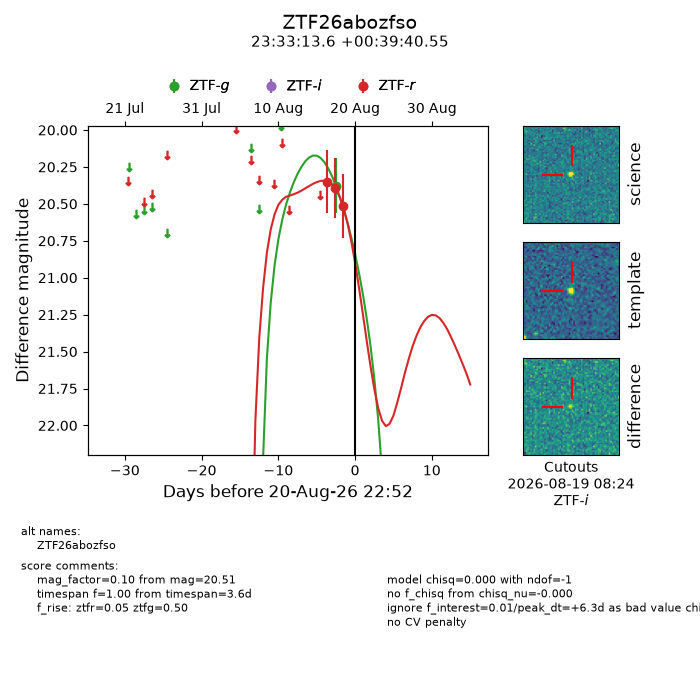
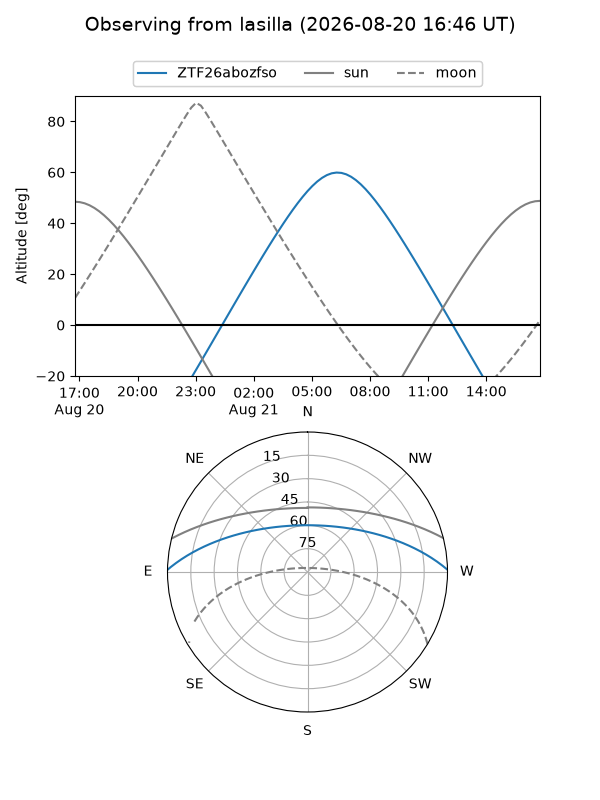
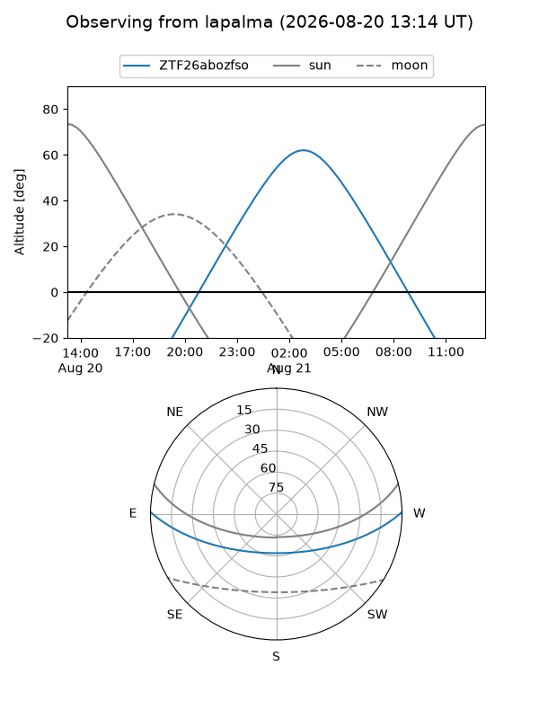
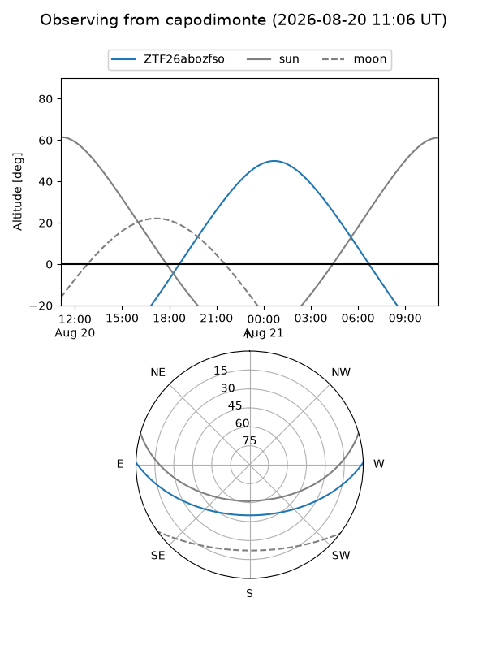
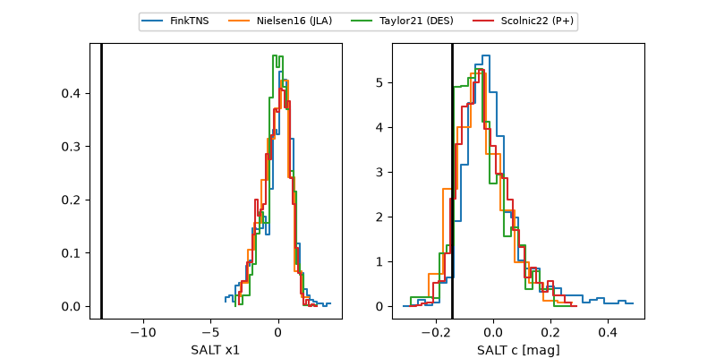

ZTF26abozfso
Target ZTF26abozfso at 2026-08-21 10:42
Aliases and brokers:
FINK-ZTF: ztf.fink-portal.org/ZTF26abozfso
Lasair-ZTF: lasair-ztf.lsst.ac.uk/objects/ZTF26abozfso
ALeRCE-ZTF: alerce.online/object/ZTF26abozfso
Direct TNS query: direct search
alt names
ZTF26abozfso (ztf,fink_ztf)
Coordinates:
equatorial (ra, dec) = 353.3067,+0.66127
equatorial (HMS+DMS) = 23:33:13.61,+00:39:40.55
galactic (l, b) = (85.6720,-56.44414)
Flags:
peak dt: +6.8
Photometry:
last ztfg=20.38, ztfr=20.51
1 ztfg, 3 ztfr detections
Lightcurve

Visibility



Additional plots
